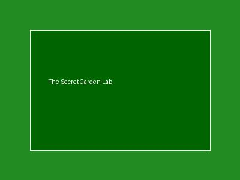

Taman ini menyimpan rahasia lebih dari sekadar piksel gambar biasa. Periksa berkas JPEG ini dengan hex editor atau utilitas baris perintah untuk menemukan flag yang disematkan di balik penutup berkas (End of File).
⬇ Download Image (garden.jpg)
FF D9.strings garden.jpg | grep CTF atau hex editor (seperti xxd atau hexedit) untuk mengekstrak teks tersembunyi.CTF{...}. Submit jawabanmu via tombol di Discord!